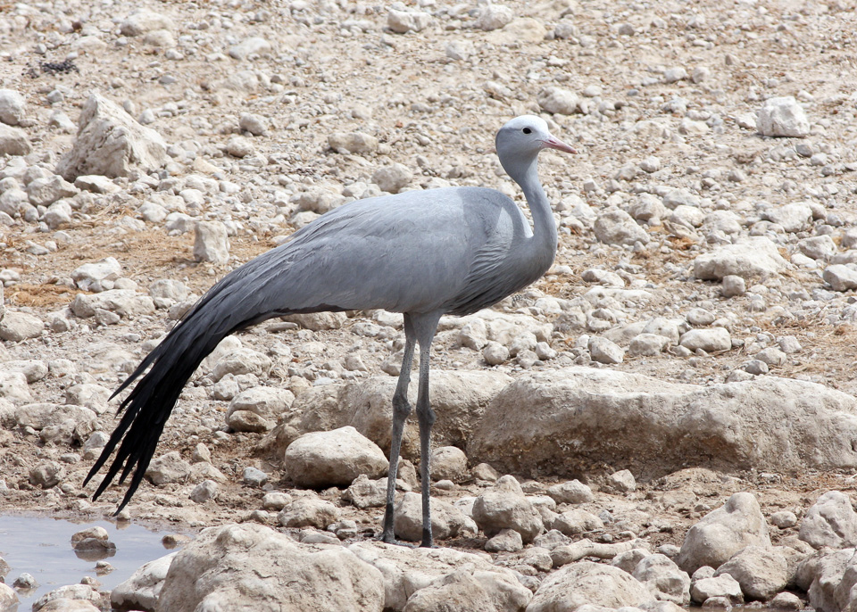
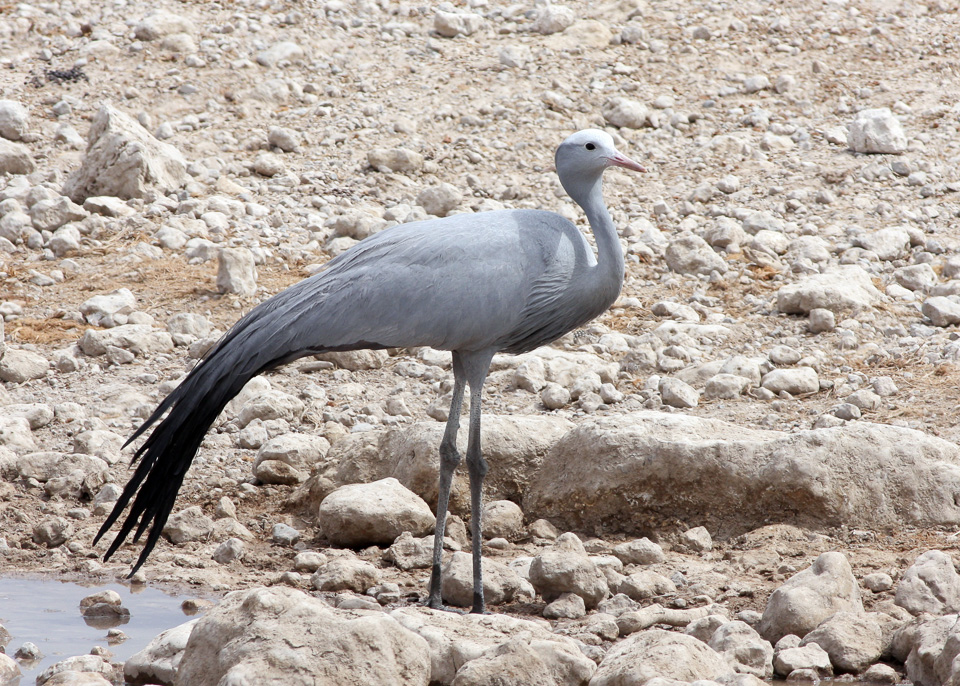
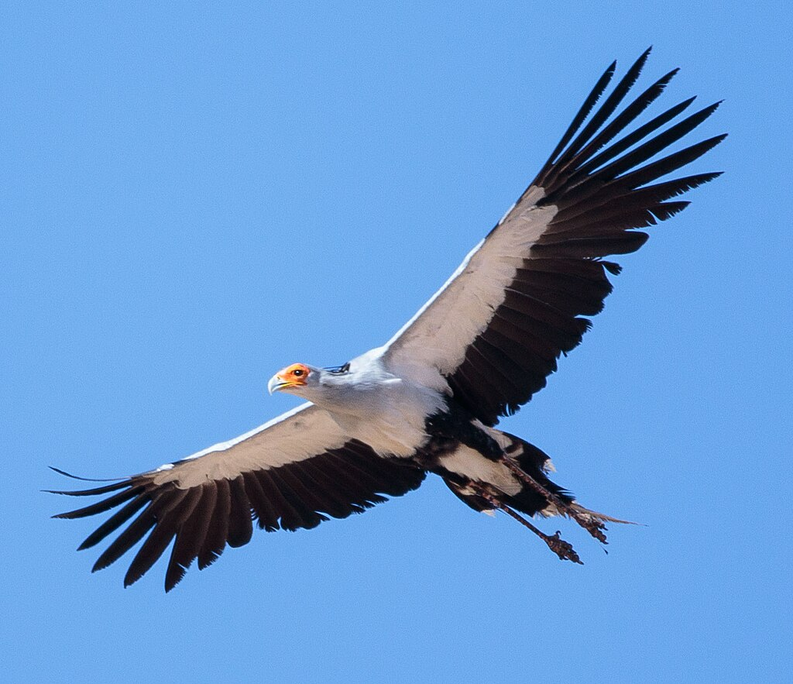
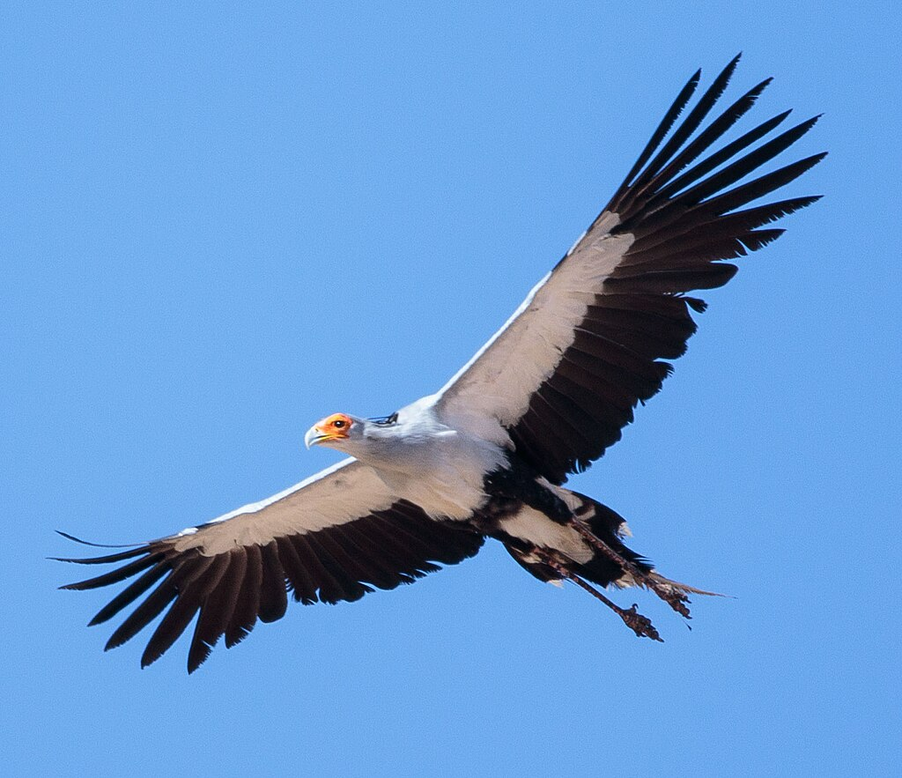

Introduction
You will come across a information part bellow here, and if you go further down, you'll come across a interactive map which you can visually see the parameters that affect biodiversity.
Information:
In this interactive site, you can see the Biodiversity parameters in South Africa. The formation of biological diversity in south africa according to temperature change is closly related to how different plant and animal species have adaptod to the various temperature ranges that are present across the region . South Africa's climate is characterized a wide range of temperatures ranging from hot and humid conditions in the east to arid and semi-arid environments in the west and north. in the eastren regions where temperatures are high ,various tress and dense forests thrive,as well as a wide range of animals,including reptiles and mammals. the high temperatures conditions support the growth of rare plant species that provide habitats for different animal species. on the other hand ,in the country's western regions , the hot and dry desert climate has encouraged the growth of unique plant species that have develpped mechanism to adapt to the extreme heat and drought. South africa's unique and diverse climate conditions have facilitated the evolution of various plant and animal species, making it one of the richest regions in the world in terms of biodiversity. Therefore,preserving and managing the natural habitats is critical in ensuring that the unique biological diversity in the region is maintained for both ecological and economic reasons.

 


 

You can find 909 fruit plants in South Africa, Gauteng, Pretoria. Some common varieties are Pepper, Common lantana, and Elephant bush. They’re not all edible, but finding each one will add a bit of color to your life! However, 102 toxic plants also exist in South Africa, Gauteng, Pretoria. These include Chinaberry tree, and Sago palm. If you see any of these, be sure to keep your distance and protect your family and pets from getting poisoned. In South Africa, Gauteng, Pretoria, you’ll find 112 types of weeds. A few common ones are Creeping woodsorrel, Jimsonweed, and Moth plant.